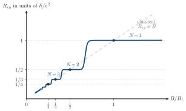
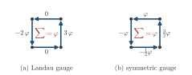

Page 4 of 13 of this session
4.6 Quantized Hall plateaus in experiment
What does the Hall resistance of a two-dimensional electron gas do when we sweep the magnetic field at fixed density, and how do we put the field into a Hamiltonian to compute it? We will see a staircase of plateaus at \(h/(Ne^2)\), one for each number \(N\) of filled Landau levels. The field then enters a continuum Hamiltonian through minimal coupling (4.3), and a lattice through the Peierls phases (4.4).
\[|C_{\text{tot}}| = \Big|\sum_{n=0}^{N-1} C_n\Big| = N \quad\Longrightarrow\quad |\sigma_{xy}| = N\,\frac{e^2}{h}, \tag{4.2}\]
This is the Hall conductance of \(N\) filled Landau levels, from Section 4.4. Here \(C_n\) is the Chern number of the level \(n\), and \(C_{\text{tot}}\) is the Chern number of all the filled bands together.
When we sweep the magnetic field on a real 2DEG, we see the transition from the classical Hall effect to the quantized one directly. At low field, before the quantum regime starts, the Hall resistance grows linearly with \(B\), which is the classical Hall effect of ordinary electromagnetism. When the field reaches the tesla range, a staircase of sharp plateaus appears in the Hall resistance instead. The precise field scale depends on the material and follows the spacing of the Landau levels that we derive below.
When the field increases further, the cyclotron energy \(\hbar\omega_c\) grows and each Landau level holds more states, \(eB/h\) per unit area, so at fixed density fewer Landau levels are filled. Each time the chemical potential goes past a Landau level, the number of filled levels \(N\) in (4.2) decreases by one, and the Hall resistance jumps to the next quantized plateau. The result for an ideal gas at fixed density is drawn in Schematic 4.5.
On a plateau with \(N\) filled Landau levels the Hall resistance is
\[R_{xy}=\frac{h}{Ne^2},\]
which is \(h/e^2=25.8\) k\(\Omega\) divided by \(N\), with no parameter of the material in it. At fixed density a stronger field fills fewer levels, so \(N\) falls and \(R_{xy}\) grows by steps.

The value of a plateau is the Hall resistance of a Hall bar, and the key box says that it has no parameter of the material in it. The quantized Hall resistances of graphene and of GaAs/AlGaAs agree with an ultimate relative uncertainty of \(8.2\times10^{-11}\). The measurement is in this article, which also says that in graphene the spacing of the lowest Landau levels is exceptionally large. In our reading the two materials have very different Landau levels and the same plateau.
A Hall bar sits on the plateau with \(N=2\) filled Landau levels. What is \(R_{xy}\) in units of \(h/e^2\)?
Show the answers
- A. ✗ False
This is false. The value \(h/e^2\approx 25.8\,\mathrm{k}\Omega\) is the plateau with \(N=1\). For \(N=2\) the resistance is \(12.9\,\mathrm{k}\Omega\).
- B. ✓ True
This is true. The Hall resistance is the inverse of the Hall conductance. With \(|\sigma_{xy}|=Ne^2/h\) we obtain \(R_{xy}=h/(Ne^2)\), which is \(1/2\) for \(N=2\).
- C. ✗ False
This is false. The value \(1/4\), which is \(6.45\,\mathrm{k}\Omega\), belongs to the plateau with \(N=4\) filled levels.
A two-dimensional electron gas has a fixed density, and the field \(B\) grows. On a plateau with \(N\) filled Landau levels
\[R_{xy}=\frac{h}{Ne^2}.\]
The field is in units of \(B_1\), where one level is filled. Which curve is \(R_{xy}\) in the quantum regime?


Show the answers
- A. ✗ False
This is false. This is the classical Hall resistance \(B/(ne)\), which is \((h/e^2)\,B/B_1\) and grows with no plateau. It holds at low field, before the quantum regime starts.
- B. ✓ True
This is true. It ends on the plateau at \(1\) in units of \(h/e^2\), and the plateaus \(\tfrac12\), \(\tfrac13\) and \(\tfrac14\) come at lower field, where they are small steps on this scale. A stronger field fills fewer levels, so \(N\) falls and \(R_{xy}\) grows. Each plateau meets the classical line \((h/e^2)\,B/B_1\) at \(B/B_1=1/N\), where the filling is \(\nu=N\).
- C. ✗ False
This is false. Its plateaus are at \(1\), \(2\), \(3\) and \(4\) in units of \(h/e^2\). With \(N\geq1\) filled levels the plateau \(h/(Ne^2)\) is at most \(h/e^2=25.8\) k\(\Omega\), so no plateau of filled Landau levels lies above \(h/e^2\).
A two-dimensional electron gas has the density \(n=3\times10^{11}\) cm\(^{-2}\). Show that its classical Hall resistance \(B/(ne)\) is \(h/(\nu e^2)\), with the filling \(\nu=nh/(eB)\), and find the field where \(N=2\) levels are just filled.
Solution
The filling \(\nu=nh/(eB)\) is the density divided by \(eB/h\), which is the number of states of one Landau level per unit area. We write the field as \(B=nh/(\nu e)\), and then
\[\frac{B}{ne}=\frac{nh}{\nu e}\,\frac{1}{ne}=\frac{h}{\nu e^2}.\]
Two levels are just filled at \(\nu=2\), so
\[B_2=\frac{nh}{2e}=\frac{3\times10^{15}\ \text{m}^{-2}\times6.626\times10^{-34}\ \text{J\,s}}{2\times1.602\times10^{-19}\ \text{C}}=6.20\ \text{T}.\]
There the classical Hall resistance is \(h/2e^2=12.9\) k\(\Omega\), which is the value of the plateau with \(N=2\). The same holds for every \(N\), so the classical line meets each plateau at the field where the filling is \(\nu=N\), as in Schematic 4.5. For this density the field \(B_1\) of one filled level is \(12.4\) T, so the classical line meets the plateaus with \(N=1\) and \(N=2\) at \(12.4\) T and \(6.20\) T.
4.7 Coupling electrons to a magnetic field with minimal coupling and the Peierls substitution
To go beyond this phenomenology and derive the spectrum of the Landau levels, we first need to know how to include a magnetic field in a Hamiltonian. In classical physics, a magnetic field \(\mathbf{B} = \nabla\times\mathbf{A}\) enters the equations of motion through the kinetic momentum, also called the mechanical momentum,
\[\boldsymbol{\pi} = \mathbf{p} - e\mathbf{A}, \tag{4.3}\]
which replaces the ordinary momentum \(\mathbf{p}\) everywhere it appears, and when we compute the equations of motion that follow from it we recover the Lorentz force law. In this session we set the magnitude of the electron charge and the speed of light to one. We keep only \(\hbar\) explicit, where the spacing of the Landau levels needs it. The same replacement (4.3) works without changes in quantum mechanics, with \(\mathbf{p}\to-i\hbar\nabla\). Minimal coupling turns the free Hamiltonian \(p^2/2m\) into \(\pi^2/2m\), and in the same way it changes the Dirac Hamiltonian below.
There is one subtle point that we cannot avoid, which is that \(\mathbf{A}\) is never unique. Any change \(\mathbf{A}\to\mathbf{A}+\nabla\chi\) with a scalar function \(\chi\) gives the same physical field \(\mathbf{B}\), so we always have to choose a gauge. We will need two gauges, the Landau gauge and the symmetric gauge, and we will see both in Section 4.8. A related point is a bit against intuition. A uniform out-of-plane field does not break the in-plane translational symmetry of the physical system. However, every choice of \(\mathbf{A}\) for this field breaks translational symmetry in a formal way, in one direction or in both. Which symmetry survives, and how much of it, is a choice of gauge and not a physical choice.
The minimal-coupling replacement (4.3) is the natural method for continuum models, which are Schrödinger or Dirac electrons, where we write and solve a differential equation directly. For a tight-binding model, which is written in real-space orbitals, the more natural method puts the dependence on the field into the wavefunctions and not into the Hamiltonian, with a local gauge transformation. In concrete terms, the hopping amplitude \(t_{ij}\) is the matrix element of the Hamiltonian between the orbital wavefunctions at sites \(i\) and \(j\). When we include the vector potential in these wavefunctions, every hopping gets multiplied by a complex phase, which is equal to the line integral of \(\mathbf{A}\) between the two sites, divided by \(\hbar\).
On a lattice the field enters through a phase on every hopping,
\[t_{ij} \;\longrightarrow\; t_{ij}\, \exp\!\left(i\int_{\mathbf{R}_j}^{\mathbf{R}_i} \mathbf{A}\cdot d\boldsymbol{\ell}\right). \tag{4.4}\]
This form is written with \(\hbar=1\). In the units of this session, with \(e=1\) and \(\hbar\) kept, the phase is \((1/\hbar)\int\mathbf{A}\cdot d\boldsymbol{\ell}\). This is the lattice form of the minimal coupling (4.3), and the sum of these phases around a closed loop is fixed by the flux of the field through the loop.
This is what is called the Peierls substitution. It is the tight-binding version of minimal coupling. The two give the same physics, since at low energies the expansion of a tight-binding model with the Peierls substitution gives the continuum Hamiltonian with minimal coupling.
The steps From the Peierls phases (4.4) to minimal coupling (4.3) at low energy
The simplest case is a chain with the lattice constant \(a\) and the hopping \(-t\), with \(t>0\), where (4.4) puts the same phase \(\theta\) on every bond, as a uniform \(\mathbf A\) along the chain does. The hop from site \(j\) to site \(j+1\) has the amplitude \(-t\,e^{i\theta}\), and the hop back has \(-t\,e^{-i\theta}\). With the Bloch states \(\sum_j e^{ikja}|j\rangle\) the band is
\[E(k) = -t\,e^{i\theta}e^{-ika} - t\,e^{-i\theta}e^{ika} = -2t\cos(ka-\theta).\]
Its minimum has moved from \(k=0\) to \(k=\theta/a\), and close to it
\[E(k) \simeq -2t + t\,(ka-\theta)^2 = -2t + \frac{\hbar^2}{2m}\Big(k-\frac{\theta}{a}\Big)^2, \qquad t=\frac{\hbar^2}{2ma^2}.\]
This is a free particle whose momentum is shifted by a constant, which is what the replacement \(\mathbf p\to\mathbf p-e\mathbf A\) of (4.3) does for a uniform \(\mathbf A\) along the chain. On an infinite chain the uniform phase does nothing else, and the gauge change \(c_j\to e^{ij\theta}c_j\) removes it. On a ring of \(L\) sites it cannot be removed, since the levels depend on the total phase \(L\theta\) around the ring, which is set by the flux through the ring.
On the square lattice with \(a=1\) we take the Landau gauge of Section 4.8. The horizontal bonds have no phase, and the vertical bond in column \(x\) has the phase \(x\varphi\), where \(\varphi\) is the sum of the phases around one plaquette. For one column the vertical bonds are the chain above with \(\theta=x\varphi\), so a Bloch state \(e^{ik_yy}\) along \(y\) gives the column the energy \(-2t\cos(k_y-x\varphi)\). The horizontal bonds connect the columns with the hopping \(-t\), so for each \(k_y\) we have a chain along \(x\),
\[H(k_y) = -2t\sum_x\cos(k_y-x\varphi)\,|x\rangle\langle x| \;-\; t\sum_x\big(|x+1\rangle\langle x| + \text{h.c.}\big).\]
Close to the bottom of the band the onsite energy is \(-2t+t\varphi^2(x-x_0)^2\), a parabola centered at \(x_0=k_y/\varphi\), and the hopping between the columns gives the kinetic energy \(-2t+tk_x^2\). This expansion needs \(\varphi\ll1\), so that the cosine is a parabola over the whole oscillator state, whose rms width is \(\ell_B/\sqrt2=1/\sqrt{2\varphi}\) columns. Together they describe a particle of mass \(\hbar^2/2t\) in a parabola whose center moves with \(k_y\). This has the form of \(\big[p_x^2+(p_y-eBx)^2\big]/2m\), the Hamiltonian of minimal coupling in the Landau gauge, where the center of the parabola also moves with \(p_y\). So at low energy the Peierls phases give minimal coupling, and the bond phase plays the role of the vector potential. The levels of this oscillator are computed in the fold of Section 3.6b, with the other Landau gauge.
A gauge change \(\mathbf{A}\to\mathbf{A}+\nabla\chi\) changes the phase of every bond in (4.4). Which quantity does not change?
\[t_{ij} \;\longrightarrow\; t_{ij}\, \exp\!\left(i\int_{\mathbf{R}_j}^{\mathbf{R}_i} \mathbf{A}\cdot d\boldsymbol{\ell}\right). \tag{4.4}\]
Show the answers
- A. ✗ False
This is false. Take \(\chi=\hbar\theta x/a\). Every bond along \(x\) gets the extra phase \(e^{i\theta}\), and \(\theta\) is arbitrary, so a single bond phase can be set to any value.
- B. ✗ False
This is false. Around a plaquette with corners \(0,1,2,3\) the added phases are \((1/\hbar)\big[(\chi_1-\chi_0)+(\chi_2-\chi_1)+(\chi_3-\chi_2)+(\chi_0-\chi_3)\big]=0\). The sum around the loop does not change.
- C. ✓ True
This is true. The sum of the phases around a loop is the flux through it divided by \(\hbar\), which is \(2\pi\) times the flux in flux quanta. The flux is set by \(\mathbf{B}\) and not by \(\mathbf{A}\). The electrons respond only to this flux.

One plaquette in the Landau gauge \(\mathbf A=(0,Bx)\) and in the symmetric gauge \(\mathbf A=\tfrac{B}{2}(-y,x)\), for the lower left corner \((x,y)=(2,1)\) and with the phases in units of the flux \(\varphi\) of the plaquette. The bonds differ, and the sum around the loop is \(\varphi\) in both.
We take a square lattice with \(a=1\) and the Landau gauge \(\mathbf A=(0,Bx,0)\). The phases of (4.4) around one plaquette add up to \(\varphi\). Which phase does the bond from \((x,y)\) to \((x,y+1)\) get?
\[t_{ij} \;\longrightarrow\; t_{ij}\, \exp\!\left(i\int_{\mathbf{R}_j}^{\mathbf{R}_i} \mathbf{A}\cdot d\boldsymbol{\ell}\right). \tag{4.4}\]
Show the answers
- A. ✓ True
This is true. Along this bond \(A_y=Bx\) is constant, so its line integral is \(x\) times the one around a plaquette, which is the flux \(B\). The four bonds of a plaquette then have \(0\), \((x+1)\varphi\), \(0\) and \(-x\varphi\), with the sum \(\varphi\).
- B. ✗ False
This is false. \(A_y=Bx\) does not depend on \(y\), so the bonds from \((2,1)\) and from \((2,5)\) upward both have \(2\varphi\). With \(y\varphi\) on the vertical bonds and no phase on the horizontal ones, the sum around a plaquette is \(y\varphi-y\varphi=0\), with no field.
- C. ✗ False
This is false. In this gauge the horizontal bonds have no phase, since \(A_x=0\). If the vertical bonds had none too, the sum around every plaquette would be zero, and there would be no field.
Try it. In the cell with the Peierls phases, B = 0.02 is the flux through a plaquette in units of the flux quantum. Change it to 0.04 and compare the distance between the first two flat levels at the bottom of the band. It is roughly twice as large, in units of the hopping \(t\), as the linear growth of the cyclotron energy with the field predicts.
- In Section 4.11 the Peierls phases (4.4) give the Landau levels and the edge states of a lattice ribbon.
- In Section 6.16 a Dzyaloshinskii-Moriya interaction puts complex phases on the hoppings of magnons, which open a topological gap.
- In Section 8.9 the spinons hop on a square lattice with a flux \(\pi\) per plaquette, and in Section 8.10 a plaquette where the product of the bond phases is \(-1\) is a vison.